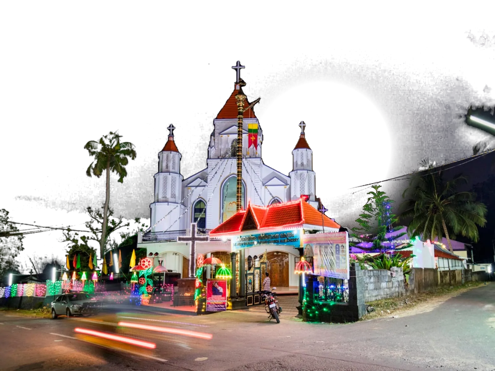
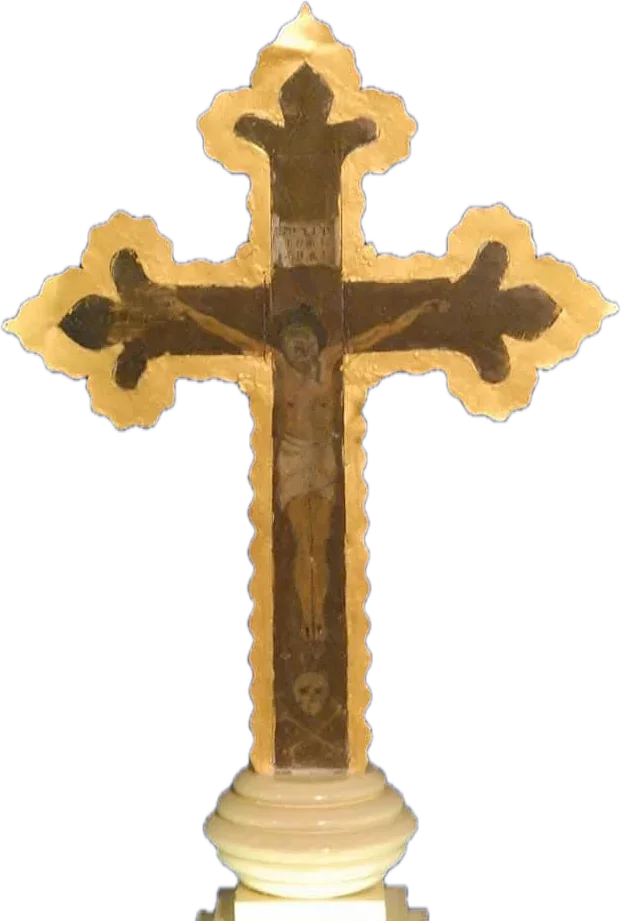
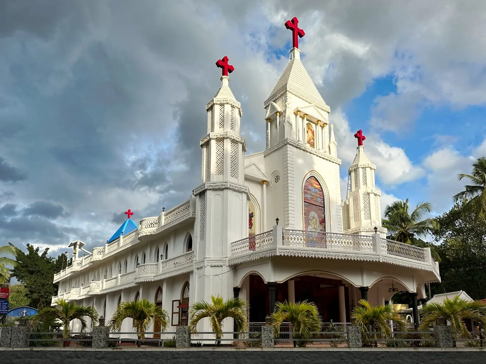
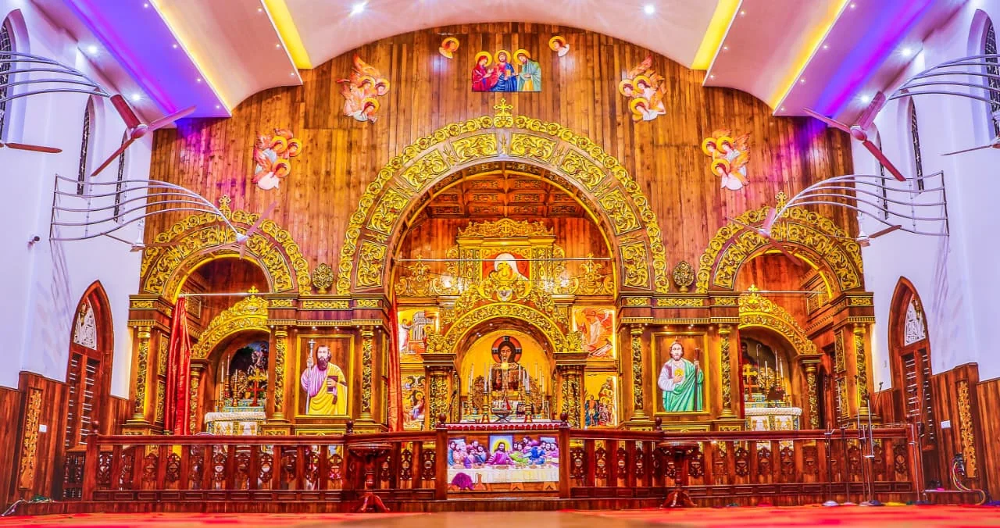
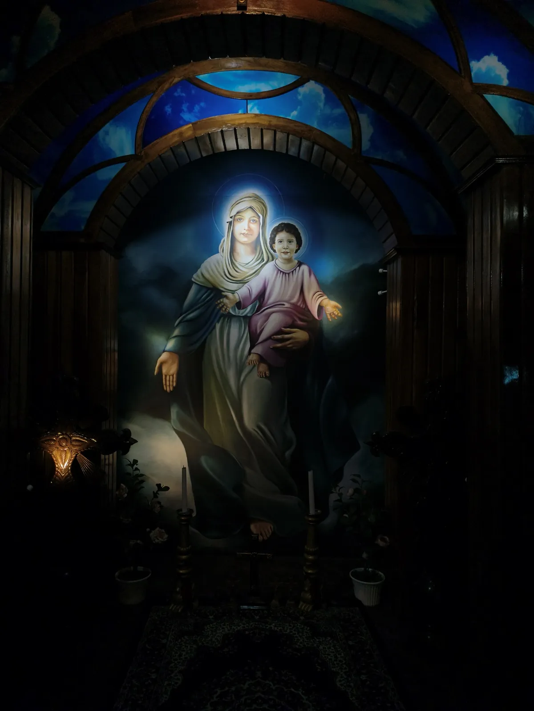
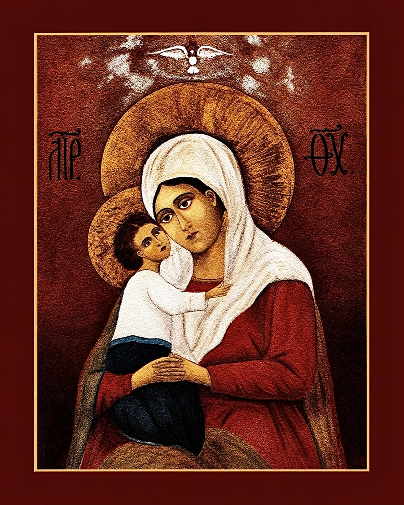
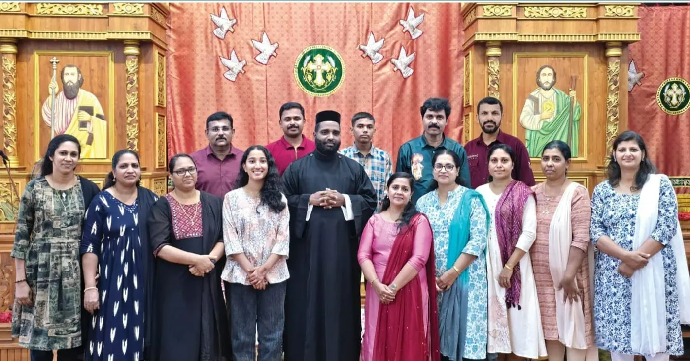
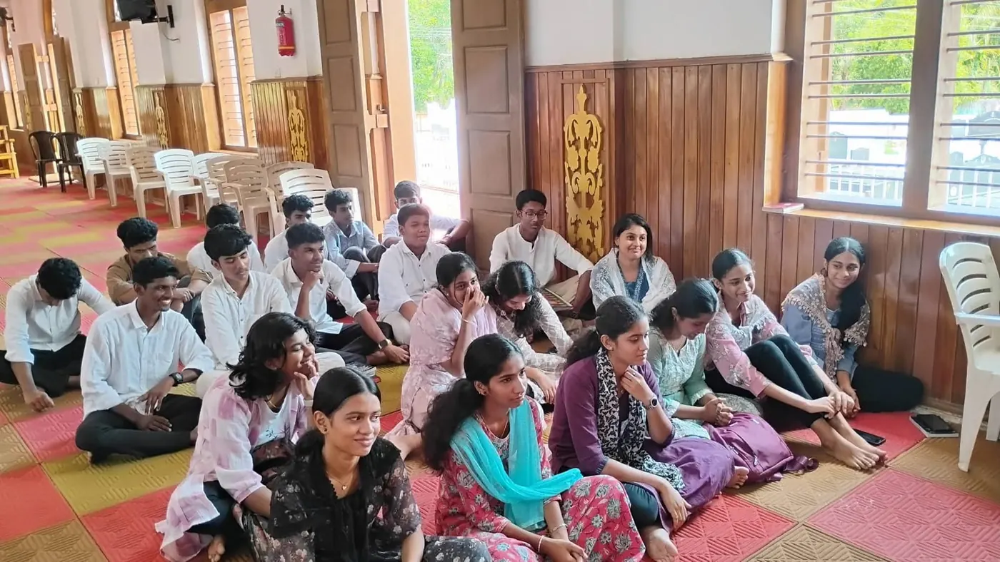

Alencherry St. Mary's Orthodox Syrian Church

സെന്റ് മേരീസ് ഓർത്തഡോക്സ് സുറിയാനി പള്ളി, ആലഞ്ചേരി
Get directionsNinety years of grace.
A Malankara Orthodox parish of the Thiruvananthapuram Diocese, first consecrated on 28 August 1937.

Nine families made a promise.
On 29 January 1934 nine men of Alencherry drew up and registered an agreement to build a church. Three years later, on 28 August 1937, Puthenkavil Geevarghese Mar Philoxenos Metropolitan consecrated it.
- George UmmenBethel Bungalow
- EapenKandathil
- Kochu KoshyPoykavilayil
- KoshyBethel Vadakkethil
- UmmenVattavilayil Mukalupurathu
- TharianKalangazhikathu
- JosephKochukonathu Puthenveettil
- ChackoThekkethil Veedu
- ChackoKizhakkekara Charuvila Veedu
That November, Schema-monk Constantine Gustovit of Mount Athos sent the new church an icon of the Mother of God and a cross. In December he sent a second: a wooden cross encased in metal.
The same ground
193719662006
Three churches have stood here. The third, consecrated by H.H. Baselios Marthoma Didymos I, is the one you see from the road.


Sunday, seven in the morning.
Holy Qurbana
Every Sunday at 7:00 AM, in Malayalam. The curtain is drawn back and the parish stands before the altar.
The Madbaha, renewed and consecrated in August 2019


Under the care of the Mother of God
The parish is dedicated to the Nativity of St. Mary, and keeps her feast on 8 September at the close of the eight-day Ettu Nombu. Her meditation shrine was first consecrated in 1982. Since 2010 the church has been an International Martha Mariam Pilgrimage Centre.
- Wed, 6:30 AMHoly Qurbana with the intercession of St. Mary
- Wed, 6:00 PMArdram, intercessory prayer to St. Mary
More than 270 families.
The Sunday School has met since 1932, before the first church stood. Today there is a choir, a youth movement and a dozen ministries. This is the Navathi year, ninety years since the consecration, kept from the 2026 feast to the feast of 2027.


Find your place: the organizations, the Navathi year, events and the gallery.
There is a place for you here on Sunday.
Holy Qurbana every Sunday at 7:00 AM. Evening prayer every day at 6:00 PM, when the lamps are lit.
- Where
- Alenchery Onthupacha Road, Alencherry, Anchal, Kollam, Kerala 691306
- Office
- +91 88914 12360 · 0475 2274426
- Confession
- Saturdays, 5:00 to 6:00 PM